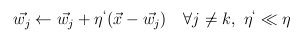
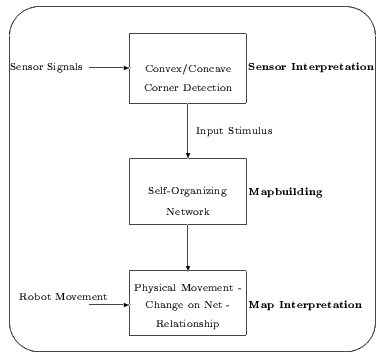
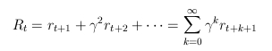

Mobil robotok szimulációja speci 6. óra
Önszervezõdés
- tanulás más formája
- példák mindenféle tanítás nélkül
- a bemenet belsõ struktúráját kell felfedezni
- osztályozás, kluszterezés, dimenziószám-csökkentés,
tulajdonság-kiemelés
- csillagászat, képi megjelenítés
Csoportosítás
- mindennapi élet gyakori feladata
- csoportokba rendezése, csoportokon belül nagy hasonlóság,
a csoportok között kis hasonlóság
- hierarchikus klaszter analízis: osztályok folytonos összevonása
- k-várható érték módszere: Gauss eloszlások paramétereinek becslése
- teljes összekötöttségû, kétrétegû háló
- a bemeneti réteg az adatok dimenziója, a kimeneti réteg
a csoportok száma
- hálósúlyok módosítása
- kezdeti véletlen súlyok
- hálódinamika
- egységvektorok
- maximum
- a kimenet: a legnagyobb 1, a többi 0 (versenyzés)
- tanulás során egyedül a gyõztes neuron súlyai változnak
- súlyvektor elforgatása a példa irányába
- csoportosítás:súlyvektorok a térnek azon részei felé fordulnak el,
ahol sok a példavektor
- súlyvektor, mint osztálycímke
- maximumkeresés nem lokális feladat, neurális hálóval másképp kell megoldani
- MAXNET
- teljes összekötöttség, fix súlyokkal
- minden neuron kimenete 0-hoz konvergál, kivéve a legnagyobbé
- normalizálás nélkül: egy a példával kis szöget bezáró,
de hosszú súlyvektor példával való szorzata nagyobb lenne, mint egy
kis abszolút értékû, de közeli súlyvektoré
- általánosabb megoldás
- súlyok módosítása e szerint
- távolságfüggvény és bemenet választásának fontossága
- mozdulatlan súlyvektorok elkerülése
- sok neuron, magas dimenziószám: súlyvektor sohasem lesz gyõztes
- súlyvektorok egyenletes inicializálása
- szivárgásos tanulás

- frekvencia-érzékeny tanulás
- megállás kérdése, hibafüggvény szerepe
Kohonen-féle tulajdonságtérkép
- winner-take-all <-> lágy versenyzés
- Kohonen eredménye a nyolcvanas évekbõl
- háló struktúrája megfelel a csoportosításnál látottaknak
- gyõztes kiválasztása sem tér el
- azonban van egy szomszédsági reláció
- bármilyen kapcsolati forma: négyzetháló, lánc, kör,...
- szomszédsági reláció != háló kapcsolatai
- tanulás új szabálya
- h gyõztes és az éppen vizsgált neuron közötti kapcsolat függvénye
- h nagyjából tetszõleges, h(k,k) = 1
- ha h mindenütt 0, akkor a csoportosításhoz jutunk vissza
- négy, nyolc szomszédság síkban, hat, huszonhat szomszédság térben
- Gauss függvény: jobb mozgás, kevesebb mozdulatlan neuron, de
hátrány nagyobb számításigény
- idõben csökkenõ szomszédság
- az idõ elõrehaladtával a háló mintegy kifeszíti a négyzet területét
- tér diszkrétizációja
- láthatóvá teszi a példák terének struktúráját
- navigáció
Önszervezõdési eljárások demonstrációja
- Internetrõl letölthetõ programok, demok
- Loos és Fritzke DemoGNG programja
- alaptípusok és újak is
- neurális gáz: idõben csökkenõ szomszédság
- növekvõ neurális gáz: egyre több neuron közelít
Önszervezõdés robotszimulációban
- Nehmzow és Smithers, 1990 a Kohonen-féle önszervezõdõ
tulajdonságtérkép egy robot navigációjához
- külvilág belsõ reprezentációja
- három fõ modul

- térkép bijekció a lehetséges állapotok terébõl a térkép terébe
- nem csak felülnézeti térkép, hanem telefonkönyv vagy a családfa is lehet
- hasonlít a csoportosításnál bemutatott elsõ változathoz (normálás)
- 50 neuronból álló hálózat, gyûrû
- egydimenziós szomszédsági reláció
- a gyõztes súlymódosulásában két-két szomszédja osztozhat
- a kimenet nem lesz binárissá alakítva
- helyek meghatározása nem a gyõztes neuronhoz rendelt pozíció alapján történik
- 50 neuron által alkotott összetett válasz egyedisége a pozíció címe
- a cím egyediségéhez a példáknak megfelelõen kell reprezentálnia a külvilágot
- elõször akadálykikerülés és véletlen mozgás
- példák a szenzorok értékei és két akadállyal való találkozás közben megtett távolság
- csukott szemmel sétálásból térkép
- falkövetés
- elsõ modul: sarok konvex vagy konkáv
- példa: az aktuális és a megelõzõ sarok irányultsága és távolsága
- az eljárás az ismert formában zajlik
- robot a fal mellett több kört megtesz
- sarkonként példa keletkezett
- a kezdetben nagy eta minden lépésben 5 százaléknyit csökken
- három kör után sarokkijelölés
- ezután különbségnorma számítása minden sarokra

- megfelelõ belsõ reprezentációt -> jelöltnél kisebb norma, mint máshol
- H sarok felismerése
- C és F, valamint B és E problémás
- példák kibõvítése két sarokra nem elég (B és E)
- még mindig kevés
- példák kibõvítése három sarokra már elég (B és E)
- elõre meghatározott mozgás, de mûködõ térkép, robusztus viselkedés
Megerõsítéses tanulás
- tanulás más formája
- hétköznapjaink szerves része
- járás, kockatorony építése, vezetés, bioreaktor
- nincs tanító, a környezet reakcióiból következik a tevékenység jó vagy
rossz eredménye
- meghatározott környezet, cselekvések
- diszkrét idõ
- környezet cselekvésektõl megváltozik, új állapot
- cselekvésért járó jutalom
- megerõsítéses tanulás struktúrája
- döntési függvény: adott állapotban, adott cselekvés
végrehajtásának valószínûsége
- tanulás a döntési függvény módosításának folyamata
- szemétgyûjtõ robot példája
- döntés haladási irány, állapot: robot és szemét helye, akku
- általában nincs jutalom, csak szemét felszedésekor, büntetés
lemerült akkunál
- nem szimplán a legnagyobb jutalom kiválasztása, hanem legnagyobb várható nyereség
- véges és végtelen eset

- felfedezés, kiaknázás dilemmája (exploráció-exploitáció)
Kiértékelõ függvények
- a döntési függvény (pi) közvetlen megadása általában
nem lehetséges,
a megoldáshoz további függvények bevezetése szükséges
- Markov tulajdonság: nem kell korábbi állapotokhoz
visszanyúlni a helyzet megismeréséhez (sakkállás)
- és véges az állapotok és a cselekvések halmaza
- akkor a teljes feladat-specifikáció az alábbi két egyenletrendszer
- átmenet valószínûségek
- várható jutalom
- az egyenletek nincsenek mindig a tanuló birtokában, de megismerhetõek.
- teljes feladat-specifikáció esetén sem könnyû a megoldás (sakk,
Rubik-kocka)
- állapotérték-függvény: mennyire értékes az adott állapot
a feladat szempontjából, az aktuális pi szerint
- akcióérték-függvény:mennyire értékes az adott állapotban az adott
cselekvés a feladat szempontjából, az aktuális pi szerint
- leggyakrabban ezeken és a döntési függvényen dolgozik a tanulás
- tanulás: értékfüggvények közelítése -> döntési függvény számítása
-> értékfüggvények növekedése -> ...
- optimális döntési függvény: minden állapotban a legjobb cselekvést választja
- négyzetháló-világban optimális állapotérték-függvény és optimális
döntési függvény
Megoldási módszerek
- dinamikus programozás
- teljes feladat-specifikáció ismert
- értékfüggvény rekurzív kiszámítása Bellman-egyenlõség alapján
- döntési függvény mohó módosítása állapotérték-függvény
szerint
- iteráció konvergenciáig
- Monte-Carlo módszerek
- nem ismert feladat-specifikáció
- a tanuló epizódokat gyárt
- jutalmak átlaga az érintett állapotokra és cselekvésekre meghatározott
akcióérték-függvény
- algoritmusa

- idõbeli differenciák
- Monte-Carlo modellnélkülisége
- értékfüggvény rekurzív elõállítása, nem kell az epizódokat végigvárni
- konvergencia: korlátos jutalom, minden állapot-cselekvés páros tetszõlegesen sokszor legyen kiválasztva
- Q-tanulás
- egyéb módszerek: megbízhatósági nyomok, függvényapproximáció
neurális hálóval
Megerõsítéses tanulás Java nyelven
Navigáció megerõsítéses tanulása
- megerõsítéses tanulás jól használható, ha idõ és a tér is diszkrét módon definiált
- robotikában nem ez a helyzet: folytonos tér, végtelen sok állapot
és cselekvés
- térdiszkrétizáció önszervezõdéssel
- B. Kröse és M. Eecen munkája: Kohonen-térképre épített dinamikus programozás
- 16 távolságszenzor + iránytû
- térkép a szenzortérben van, mégis a valós világ pontjait reprezentálják
- Kohonen szomszédság elemei nem feltétlenül fizikailag közvetlenül
elérhetõ pontokat kötnek össze
- a szomszédsági relációk helyett a dinamikus programozás
hozza létre az állapotátmenetekhez szükséges cselekvések döntési
függvényét
- átmenetek valószínûségének meghatározása a robot szabadon közlekedésével
- közvetlen jutalom: a távolság és a tárgyaknak való ütközések
függvényében jön létre
- teljesen specifikáltság -> dinamikus programozás
- egy önszervezõdés során elõálló térkép
- a robot navigációja